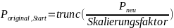
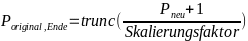
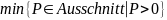
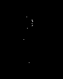

Figure
1: original Version

Figure
2: Verkleinerte Version

Figure
3: LUNTE Bilddaten
Um die Wirkungsquerschnitte beider Experimente vergleichen zu können, müssen die Panoramas die selben Dimensionen haben. Dafür müssen die Daten (Bilder und csv-Dokumente) des LUNTE Experiments verkleinert werden. Dabei ist darauf zu achten, dass die totale Pixelfläche, auf denen SEL detektiert wurden relativ zur Gesamtfläche konstant bleibt. Es dürfen also keine Pixel verloren gehen, wodurch Standardlösungen aus Bilbliotheken wie scipy oder numpy ungeeignet sind. Des weiteren muss für den Fall, dass mehrere Pixel, in denen SEL detektiert wurden, auf dasselbe Pixel gemappt werden sichergetellt werden, dass hier ein Minimalwert (größer 0) eingetragen wird, um die Latch-Up-Schwelle nicht zu verfälschen.
Zur Berechnung des Wirkungsquerschnitts der LUNTE Daten wird ein vorhandenes Skript von Dr.-Ing. Hannes Zöllner verwendet. Um die beiden Datensätze vergleichbar zu machen müssen vier Schritte ausgeführt werden bevor das Skript ausgeführt werden kann:
Panoramas zusammen setzen
Größe ändern (Pixel Binning)
Überlappende Pixel Löschen
Streifen zusammenfügen
Die Panoramas werden aus den Bildern genau wie die GSI-Bilder manuell zusammen gesetzt und so eng wie möglich auf die Größe des Chips zugeschnitten.
Nachdem die Skalierungsfaktoren berechnet und die csv-Datei eingelesen wurde, werden sie an die Funktion custom_binning_smallest_value() zur weiteren Verarbeitung gegeben. Dabei werden 3 verschiedene Schritte ausgeführt:
Berechnen der neuen Dimensionen und erstellen eines entsprechenden Arrays.
Für jedes Pixel im neuen Array:
Berechnen welche Pixel des originalen Arrays (Bereich) mit dem aktuellen Pixel korrespondieren
Extraktion der Minimalwerte größer 0 aus dem Bereich und Speichern im neuen Array
Um die neuen Dimensionen zu berechnen, werden die Dimensionen des Originalarray mit dem jeweiligen Skalierungsfaktor multipliziert und in einer Liste new_shape gepeichert. Damit kann dann mithilfe der Funktion numpy.zeros(new_shape) ein neuer Array mit den neuen Dimensionen und mit Nullen gefüllt erstellt werden.
Für jedes Pixel in dem neuen Array wird berechnet, mit welchen Pixeln des originalen Arrays es korrespondiert. Dazu wird der Index entlang jeder Achse mit dem entsprechenden Skalierungsfaktor dividiert. Dadurch wird die Skalierung rückgängig gemacht und die Position im originalen Array wird zurückgegeben.

Um den Bereich einzugrenzen fehlt noch ein Endwert. Dieser wird mit der Formel

berechnet.
Mit den Start und Endpixeln kann nun ein Ausschnitt des Originalarrays extrahiert werden, der in dem neuen Array zu einem Pixel zusammengesetzt wird.
In dem Ausschnitt kann nun der Minimalwert größer Null (  ) gefunden werden und in das neue Array eingesetzt werden. Wenn das auf keinen der Werte zutrifft, bleibt das Pixel Null.
Um bewerten zu können, ob die Funktion die Vorgaben erfüllt und wird die csv-Datei: 20230606-124422_t.csv als Array eingelesen und dann um die Faktoren
x: 0.8266033254156769
y: 0.7913486005089059
(original Skalierungsfaktoren bei Verwendung des von mir erstellten GSI-Panoramas) verkleinert.
Das Ergebnis wird mit zwei Methoden überprüft:
Vergleich der relativen aktiven Fläche
Exportieren als Bild
Um die relativen aktiven Flächen zu vergleichen, wurden für beide Arrays alle SEL (Werte >0) gezählt und dann durch die Gesamtzahl aller Werte dividiert. Das liefert folgende Ergebnisse
original: 0,014004811633939492
verkleinert: 0,014512083097795364
Im verkleinerten Bild zeigt sich, dass ein größerer Anteil der Fläche, nämlich ungefähr 0,05% der Gesamtfläche mehr, aktiv ist. Das entspricht einem Zuwachs von ca. 3,6% bezogen auf die relative aktive Fläche im original Array.
Es werden sowohl das originale als auch das neue Array mit Hilfe der OpenCV Funktion cv2.imwrite() als Bilder exportiert. Dadurch können die Arrays besser visuell verglichen werden.
Figure
1: original Version
Figure
2: Verkleinerte Version
Figure
3: LUNTE Bilddaten
Auf den ersten Blick sehen beide Bilder sehr ähnlich aus und weisen die selben Strukturen auf. Das deuted daraufhin, dass die Funktion grundsätzlich funktioniert. Jetzt muss noch geprüft werden, ob einzelne Pixel auch bestehen bleiben oder ‘verschluckt’ werden. Dazu wird ein Cluster von Pixeln im oberen Viertel des Original Bildes ausgewählt und mit dem korrespondierenden Bereich im verkleinerten Bild verglichen.

Figure
5: original Version
Figure
4: verkleinerte Version
Auch diese Ausschnitte sehen sehr ähnlich aus. Auch einzelne Pixel werden nicht ‘verschluckt’ und bleiben auch im verkleinerten Datensatz als Datenpunkt bestehen.
Um herauszufinden, wie viele Pixel-Spalten sich überlappen werden die skalierten Bilder zu einem Panorama zusammengefügt und dann so zugeschnitten , dass nur die sich überlappenden Bereiche übrig bleiben. Diese können gezählt und anschließend die selbe Breite am rechten und linken Rand der csv-Datei löschen. Eine eventuelle verschiebung entlang der y-Achse hat keinen Einflüss auf die Berechnung des Wirkungsquerschnitts.
Zum Zusammenfügen der csv-Dateien werden diese im ersten Schritt eingelesen, und die Dimensionen der einzelnen Arrays ermittelt. Die Dokumente werden Reihenweise zusammengefügt, wenn es zu unterschieden in der länge der Arrays kommt werden diese mit Nullen (0) aufgefüllt. Der so entstandene Array wird in eine csv-Datei geschrieben und im Unterordner ‘resized’ gespeichert.